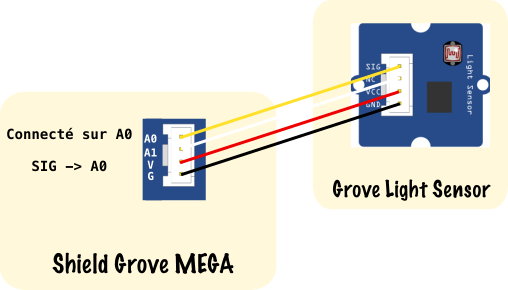
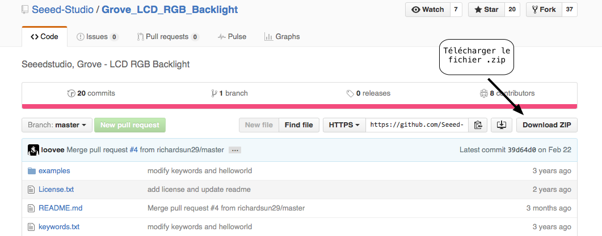
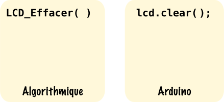
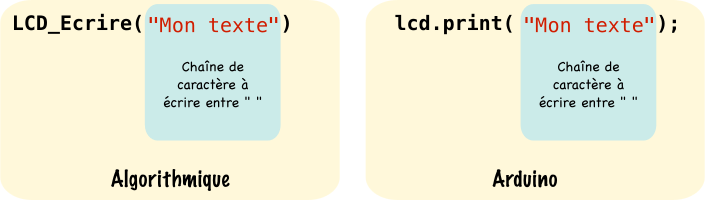

Utilisation des modules Grove de Seeed Studio
Les modules Grove de Seeed Studio permettant de prototyper rapidement une solution, seront utilisés lors des activités sin.
1. Introduction

Seeed Studio est une entreprise Chinoise basée à Shenzhen qui commercialise des produits électroniques pour les Makers. Grove est un système de modules se branchant sur une carte mère appelée Grove shield :
- Pour Arduino UNO : Grove Base Shield
- Pour Arduino Mega : Grove Mega Shield
Beaucoup de documentation est disponible sur le Wiki de Seeed Studio allez y jeter un coup d'oeil !
2. Comment connecter un module au shield Grove ?
Ci-dessous le shield Grove Mega qui s'enfiche par dessus une carte Arduino Mega:

Ce shield dispose de 4 familles de connecteurs :
-
Les connecteurs sur pins numériques commençant par un D qui reçoivent des modules numériques comme le module LED, le bouton poussoir (Button), le capteur d'inclinaison (Tilt Switch) et le bargraphe (LED Bar)
-
Les connecteurs sur pins analogiques commençant pas un A qui reçoivent des modules analogiques comme le module potentiomètre (Rotary Sensor), le capteur de luminosité (Light Sensor) et le capteur de température (Temperature Sensor).
-
Les connecteurs i2C IIC sur la carte, au nombre de 3 (tous les mêmes, spécificité du bus) permettant de connecter par la liaison série i2C des composants fonctionnant sur ce bus comme l'écran LCD (LCD RGB Backlight)
-
Les connecteurs UART, au nombre de 4 un pour chaque Serial disponible sur l'Arduino MEGA, permettent de connecter des modules utilisant ce type de liaison.
La connexion des modules Grove sur le shield se fait grâce à des cordons de 4 fils :
- Un fil noir pour la masse noté G ou GND sur les modules
- Un fil rouge pour l'alimentation noté Vcc ou V sur les modules
- Un fil blanc pour un des deux signaux bien souvent ce fil n'est pas utilisé et est noté NC (Non Connecté)
- Un fil jaune pour un des deux signaux noté SIG, c'est ce fil qui est utilisé principalement pour connecter le module à la pin désirée.

Sur ce schéma nous avons connecté le module Light Sensor à la pin analogique A0.
3. Les actionneurs
Les modules actionneurs reçoivent de l'énergie électrique venant de l'Arduino et la transforme, par exemple le module LED reçoit de l'énergie électrique et la transforme en énergie lumineuse.
3.1 Le module LED
Nous donnons ci-dessous un exemple d'utilisation du module LED, ce code fait clignoter la LED du module Grove LED toutes les secondes qui est connecté sur la pin numérique 2 :
const int led=2; //Déclaration d'une constante de type int et de nom "led", contenant 2 la pin où la led est reliée
void setup() //Initialisations
{
pinMode(led,OUTPUT); //Mise en sortie de la pin numérique 2
}
void loop() //Programme principal
{
digitalWrite(led,HIGH); //Mise à 1 de la pin numérique 2 désignée par la constante led
delay(1000); //Pause de 1s
digitalWrite(led,LOW); //Mise à 0 de la pin numérique 2 désignée par la constante led
delay(1000); //Pause de 1s
}
4. Les capteurs
Les modules capteurs émettent un signal électrique (une tension) image de la donnée physique (température, luminosité ...) qu'ils mesurent.
4.1 Le module bouton poussoir : Button
Nous donnons ci-dessous un code exemple de l'utilisation du module Button, le comportement est le suivant : L'appui sur le bouton poussoir relié sur la pin numérique 3, provoque l'allumage de la led reliée sur la pin numérique 2. Le relâchement provoque son extinction.
const int led=2; //Déclaration d'une constante de type int et de nom "led", contenant 2 la pin où la led est reliée
const int bp=3; //Déclaration d'une constante de type int et de nom "bp", contenant 3 la pin où le bouton poussoir est relié
boolean etat=false; //Déclaration d'une variable "etat" de type booléen initialisée à false (soit niveau logique 0)
void setup() //Initialisation
{
pinMode(led,OUTPUT); //Mise en sortie de la pin numérique 2 pour la led
pinMode(bp,INPUT); //Mise en entrée de la pin numérique 3 pour le bouton poussoir
}
void loop() //Programme principal
{
etat=digitalRead(bp); //Lecture de la valeur de la pin 3 : bouton appuyé -> etat=1 bouton relaché -> etat=0
digitalWrite(led,etat); //La led s'allume ou s'éteint suivant la valeur de "etat"
}
4.2 Le module capteur d'inclinaison : Tilt Switch
Nous donnons ci-dessous un code exemple de l'utilisation du module Tilt Switch, le comportement est le suivant : L'inclinaison du capteur relié sur la pin numérique 3, provoque l'allumage de la led reliée sur la pin numérique 2. Le fait de mettre le capteur à l'horizontale provoque son extinction.
const int led=2; //Déclaration d'une constante de type int et de nom "led", contenant 2 la pin où la led est reliée
const int tilt=3; //Déclaration d'une constante de type int et de nom "bp", contenant 3 la pin où le bouton poussoir est relié
boolean etat=false; //Déclaration d'une variable "etat" de type booléen initialisée à false (soit niveau logique 0)
void setup() //Initialisation
{
pinMode(led,OUTPUT); //Mise en sortie de la pin numérique 2 pour la led
pinMode(tilt,INPUT); //Mise en entrée de la pin numérique 3 pour le tilt switch
}
void loop() //Programme principal
{
etat=digitalRead(tilt); //Lecture de la valeur de la pin 3 : tilt incliné -> etat=1 tilt horizontal -> etat=0
digitalWrite(led,etat); //La led s'allume ou s'éteint suivant la valeur de "etat"
}
4.3 Le module potentiomètre : Rotary Sensor
Nous donnons ci-dessous un code exemple de l'utilisation du module Rotary Sensor, le comportement est le suivant : Le module potentiomètre est relié à la pin analogique 0, le fait de faire tourner celui-ci fait varier la tension \(V_{a0}\) entre 0 et 5V sur cette pin. Nous utilisons le CAN pour lire cette tension et la transformer en une information numérique N comprise entre 0 et 1023 (sur 10 bits), nous "re-bornons" cette information à l'aide de la fonction Arduino map() entre 0 et 255 (sur 8 bits) et l'utilisons avec le PWM sur la pin numérique 2 pour faire varier la luminosité du module led.
const int led=2; //Déclaration d'une constante de type int et de nom "led", contenant 2 la pin numérique où la led est reliée
const int rotary_sensor=0; //Déclaration d'une constante de type int et de nom "rotary_sensor", contenant 0 la pin analogique où le potentiomètre est relié
int N=0; //Déclaration d'une variable entière appelée N est initialisée à 0 pour stocker la sortie du CAN
void setup() //Initialisation
{
pinMode(led,OUTPUT); //Mise en sortie de la pin numérique 2 pour la led
}
void loop() //Programme principal
{
N=analogRead(rotary_sensor); //Conversion Analogique -> Numérique de la tension Va0 -> N
N=map(N,0,1023,0,255); //Rebornage de 0<N<1023 en 0<N<255
analogWrite(led,N); //La luminosité de la led varie en fonction de N et donc de Va0
}
4.4 Le module LDR : Light Sensor
Nous donnons ci-dessous un code exemple de l'utilisation du module Light Sensor, le comportement est le suivant : Le module LDR est relié à la pin analogique 0, le fait de faire varier la luminosité (cacher ou dévoiler le capteur) fait varier la tension \(V_{a0}\) entre 0 et 5V sur cette pin. Nous utilisons le CAN pour lire cette tension et la transformer en une information numérique N comprise entre 0 et 1023 (sur 10 bits), nous "re-bornons" cette information à l'aide de la fonction Arduino map() entre 0 et 255 (sur 8 bits) et l'utilisons avec le PWM sur la pin numérique 2 pour faire varier la luminosité du module led. Cette fois-ci une forte luminosité entraînera une extinction de la led et une faible luminosité un éclairement maximal.
const int led=2; //Déclaration d'une constante de type int et de nom "led", contenant 2 la pin numérique où la led est reliée
const int light_sensor=0; //Déclaration d'une constante de type int et de nom "light_sensor", contenant 0 la pin analogique où la LDR est reliée
int N=0; //Déclaration d'une variable entière appelée N est initialisée à 0 pour stocker la sortie du CAN
void setup() //Initialisation
{
pinMode(led,OUTPUT); //Mise en sortie de la pin numérique 2 pour la led
}
void loop() //Programme principal
{
N=analogRead(light_sensor); //Conversion Analogique -> Numérique de la tension Va0 -> N
N=map(N,0,1023,255,0); //Rebornage de 0<N<1023 en 0<N<255 avec inversion pour 0 ->255 pour 1023->0
analogWrite(led,N); //La luminosité de la led varie en fonction de N et donc de Va0
}
Info
Il est possible que la tension de la LDR même avec une forte luminosité ne fasse pas monter la valeur N à 1023, il s'agit donc de regarder la valeur max réelle de N (à l'aide du Serial par exemple) pour ajuster le rebornage dans map().
4.5 Le module température : Temperature Sensor
Nous donnons ci-dessous un code exemple de l'utilisation du module Temperature Sensor, le comportement est le suivant : Le module température est relié à la pin analogique 0, le fait de faire monter la température au dessus de 30°C allume le module led relié sur la pin numérique 2. Faire descendre la température en dessous provoque l'extinction de la led.
#include <math.h> //Ajout de la bibliothèque C/C++ math.h pour utiliser la fonction logarithme décimal : log()
//Constantes prises sur la documentation du Wiki de Seeed Studio
const int B=4275; //B valeur de la LDR en Ohms
const int R0 = 100000; //R0 = 100k
const int led=2; //Déclaration d'une constante de type int et de nom "led", contenant 2 la pin numérique où la led est reliée
const int temperature_sensor=0; //Déclaration d'une constante de type int et de nom "temperature_sensor", contenant 0 la pin analogique où le capteur de température est relié
int N=0; //Déclaration d'une variable entière appelée N est initialisée à 0 pour stocker la sortie du CAN
float R=0; //Déclaration d'une variable flottante appelée R est initialisée à 0 pour calculer la température
float temperature=0; //Déclaration d'une variable flottante appelée R est initialisée à 0 pour stocker la valeur de la température
void setup() //Initialisation
{
pinMode(led,OUTPUT); //Mise en sortie de la pin numérique 2 pour la led
}
void loop() //Programme principal
{
N=analogRead(temperature_sensor); //Conversion Analogique -> Numérique de la tension Va0 -> N
//Calcul de la temperature suivant la doc du Wiki de Seeed Studio
R=1023.0/((float)N)-1.0;
R=100000.0*R;
temperature=1.0/(log(R/100000.0)/B+1/298.15)-273.15; //calcul de la temperature suivant la doc
if(temperature>30)
{
digitalWrite(led,HIGH); //Allumage de la led si temperature > 30
}
else
{
digitalWrite(led,LOW); //Extinction de la led si temperature < 30
}
}
Note
La bibliothèque math.h est déjà pré-ajoutée dans l'IDE Arduino inutile de chercher où la télécharger.
5. L'afficheur LCD
Ce module est un écran LCD noir et blanc de 2 lignes et 16 colonnes, un rétro-éclairage fonctionnant à l'aide de leds RGB est disponible.
Info
Ce module fonctionne grâce à la liaison i2C, il est donc nécessaire de choisir un connecteur i2C sur le shield Grove.
5.1 La bibliothèque rgb_lcd.h
L'ajout d'une bibliothèque à l'IDE Arduino est nécessaire à l'utilisation du module LCD RGB Backlight, celle-ci est disponible sur le Github de Seeed Studio : lien

Ensuite, ajoutez le fichier .zip à l'IDE Arduino :

Il suffit d'inclure à présent la bibliothèque au début du code Arduino de cette manière :
#include <Wire.h> //Ajout de la bibliothèque i2c pour utiliser le lcd
#include "rgb_lcd.h" //Ajout de la bibliothèque du lcd
Info
Ne pas oublier d'ajouter également la bibliothèque Wire.h pour utiliser la liaison i2C.
5.2 Initialisation du lcd avec lcd.begin()
Nous donnons ci-dessous un code exemple de l'initialisation de l'écran Grove RGB LCD :
rgb_lcd lcd; //Constructeur rgb_lcd pour l'objet lcd
void setup() //Initialisations
{
lcd.begin(16, 2); //Initialisation du lcd de 16 colonnes et 2 lignes
}
lcd de type rgb_lcd."%}
Écrire où l'on veut avec lcd.setCursor()
L'écran lcd du module Grove RGB LCD dispose de 16 colonnes et 2 lignes, si on ne précise rien quand on code l'instruction permettant d'écrire des choses dessus, la colonne 0 et la ligne 0 sont prisent en défaut ce qui a pour conséquence d'écrire en haut à gauche :

Mais comment fait-on si on souhaite commencer à écrire au milieu ? Il suffit d'utiliser la fonction lcd.setCursor(), dont nous expliquons le fonctionnement ci-dessous :

5.3 Tout effacer avec lcd.clear()
La fonction lcd.clear() permet d'effacer entièrement l'écran lcd, nous donnons la structure de cette fonction ci-dessous :

5.4 Écrire avec lcd.print()
La fonction lcd.print() permet d'écrire ce que l'on veut sur le lcd mais ne gère pas le dépassement (écrire au delà des 16 colonnes et 2 lignes), c'est au développeur de vérifier deux fois que ce qu'il souhaite écrire tienne bien dans la place impartie. Nous donnons la structure de cette fonction ci-dessous :
- Pour écrire une chaîne de caractères :

- Pour écrire le contenu d'une variable :

Nous donnons ci-dessous un code exemple complet de l'utilisation de lcd.print() et montrons le résultat sur l'écran lcd :
#include <Wire.h> //Ajout de la bibliothèque i2c pour utiliser le lcd
#include "rgb_lcd.h" //Ajout de la bibliothèque du lcd
rgb_lcd lcd; //Constructeur rgb_lcd pour l'objet lcd
int cpt=0; //Déclaration d'un entier "cpt" initialisé à 0 pour compter le nombre de cycles d'affichages
void setup() //Initialisations
{
lcd.begin(16, 2); //Initialisation du lcd de 16 colonnes et 2 lignes
}
void loop() //Programme principal
{
lcd.setCursor(0,0); //On commence à écrire en haut à gauche
lcd.print("hello, world!"); //On écrit "hello, world!"
lcd.setCursor(0,1); //On se met sur la ligne du bas à gauche
lcd.print("STI2D SIN"); //On écrit "STI2D SIN"
delay(3000); //On attend 3s
lcd.clear(); //On efface le lcd
lcd.setCursor(0,0); //On commence à écrire en haut à gauche
lcd.print("Lycee GT"); //On écrit "Lycee LGT"
lcd.setCursor(0,1); //On se met sur la ligne du bas à gauche
lcd.print("L.Rascol Albi"); //On écrit "L.Rascol Albi"
delay(3000); //On attend 3s
lcd.clear(); //On efface le lcd
lcd.setCursor(0,0); //On commence à écrire en haut à gauche
lcd.print("Affichage : "); //On écrit "Affichage : "
lcd.setCursor(13,0); //On se met sur la 13 ème colonne de la première ligne
lcd.print(cpt); //On écrit le contenu de la variable cpt
delay(3000); //On attend 3s
lcd.clear(); //On efface le lcd
cpt++ //On incrémente de 1 la variable cpt
}

5.5 Changer la couleur du rétro-éclairage avec lcd.setRGB()
Le module LCD RGB Backlight comme son nom l'indique contient des leds RGB pour Red Green Blue. En faisant varier l'intensité de chaque composante nous pouvons choisir la couleur du rétro-éclairage parmi une infinité. Nous donnons ci-dessous la structure de la fonction lcd.setRGB() à paramétrer dans le void setup().

L'intensité de chaque couleur se code sur 8 bits, soit une valeur entre 0 et 255. Nous donnons ci-dessous un code exemple pour un éclairage en rouge et montrons le résultat sur l'écran lcd :
#include <Wire.h> //Ajout de la bibliothèque i2c pour utiliser le lcd
#include "rgb_lcd.h" //Ajout de la bibliothèque du lcd
rgb_lcd lcd; //Constructeur rgb_lcd pour l'objet lcd
void setup() //Initialisations
{
lcd.begin(16, 2); //Initialisation du lcd de 16 colonnes et 2 lignes
lcd.setRGB(255,0,0); //Configuration de l'éclairage en rouge
}
void loop() //Programme principal
{
lcd.setCursor(0,0); //On commence à écrire en haut à gauche
lcd.print("hello, world!"); //On écrit "hello, world!"
lcd.setCursor(0,1); //On se met sur la ligne du bas à gauche
lcd.print("STI2D SIN"); //On écrit "STI2D SIN"
}